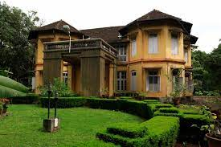
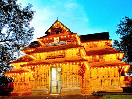

Thrissur formerly Trichur, also known by its historical name Thrissivaperur, is a city and the headquarters of the Thrissur district in Kerala, India. It is the third largest city in Kerala after Kochi and Kozhikode, and the 21st largest in India. It is famous for the Thrissur Pooram festival.Thrissur is one of the oldest cities in Kerala. Thrissur is known as "Cultural Capital of Kerala" due of its cultural, spiritual and religious leanings throughout history. One of its main cultural events is the Thrissur Pooram, which attracts quite a number of tourists and travellers.

Athirappilly Waterfalls
On the outskirts of the city at a distance of some 60 km, the Athirappilly waterfalls mark one of the best places to visit in Thrissur. Standing 80 ft tall and about 330 ft wide, these falls are the largest in the state of Kerala.

Thrissur Zoo and State Museum
Smack in the middle of the city is one of the most alive and beautiful of all Thrissur Tourist Places. Also known as the State Museum & Zoo, the Thrissur Zoo is located at about 2 km from the city centre, the zoo is more than just a place for showcasing the beautiful flora and fauna of the region.

Vadakkunnathan Temple
An ancient temple of Kerala, the Vadakkunnathan Temple is also the oldest temple of the state dedicated to Lord Shiva. Following the architectural style of Kerala, the temple has monumental towers surrounding it.